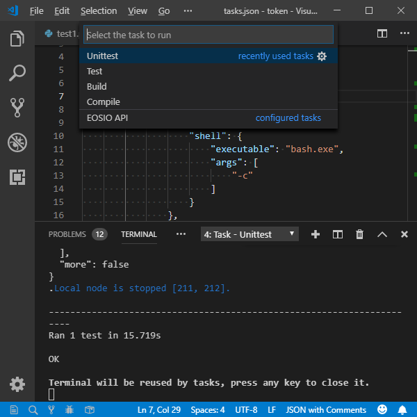

Working with EOS Contracts using EOSFactory in Visual Studio Code¶
The purpose of this tutorial is to demonstrate how EOSFactory can be combined with Visual Studio Code in order to streamline the process of working with EOS smart-contracts.
Prerequisites¶
This tutorial assumes that you have successfully installed EOSFactory. If it’s not the case, please refer to Installing EOSFactory.
We assume that you are familiar with the material covered in Interacting with EOS Contracts in EOSFactory.
We also assume you have Visual Studio Code installed. If you are on Windows and run VSC for the first time, in order to get access to Windows Subsystem for Linux bash terminal inside VSC, navigate to
Preferences -> Settingsand overwrite the default configuration for theterminal.integrated.shell.windowsoption:"terminal.integrated.shell.windows": "C:\\Windows\\sysnative\\bash.exe"
Finally, we assume that you are familiar with the official EOS Hello World tutorial, as it presents the standard way to compile and deploy smart-contracts in EOS. What we present here is an alternative.
Create a new smart-contract VSC project¶
In a bash terminal run the following command:
cd eosfactory
python3 -m eosfactory.utils.create_project foo_bar 01_hello_world
NOTE: If you are on Windows and have not restarted your WSL bash terminal after EOSFactory installation, you’ll need to do so before you execute this command (if you are using WSL bash terminal inside Visual Studio Code, restart your VSC instead).
The first parameter (in our case foo_bar) is the name of your contract. It can be any name you want, provided there are no spaces in it. Letters, numbers, underscores _, dots . and dashes - are allowed.
The second parameter (in our case 01_hello_world) denotes the template from which the new contract will be created. As of now there are three templates to choose from (i.e. 01_hello_world, 02_eosio_token and 03_tic_tac_toe), with more coming in the future. This parameter is optional, the default value is 01_hello_world.
Open the new project in Visual Studio Code¶
You can open the new project manually by launching VSC and navigating to the projects’s folder.
Alternatively, you can add the --vsc option to the command and then VSC will launch automatically, already switched to the projects’s folder, for example:
cd eosfactory
python3 -m eosfactory.utils.create_project foo_bar 01_hello_world --vsc
Folder structure¶
Once the project is open in VSC, you’ll see the following file structure:

What you get is a complete smart-contract workspace with clear separation between smart-contract source code, build output files and unit tests. Everything is set up and ready to be built and unit tested:
srcdirectory, thecppandhppfiles are there.testdirectory, test scripts are there.resourcesdirectory, everything that does not fit to the previous two places goes there. It may contain the Ricardian contract files..vscodedirectory that contains IntelliSense definitions, task definitions, etc.CMakeLists.txtfile, CMake definitions.
NOTE: You are free to change the literals, e.g. you can change the name of test1 to some other name, but if you do so you’ll also have to update both the CMakeLists.txt and .vscode/tasks.json files.
Use CMake in Visual Studio Code¶
With EOSFactory you can use CMake routines to compile, build and unit test a contract.
First open a bash terminal inside VSC (navigate to View -> Integrated Terminal), and switch to the build folder:
cd build
Configure¶
To configure your project:
cmake ..
The output should look like this:
-- The C compiler identification is GNU 7.3.0
-- The CXX compiler identification is GNU 7.3.0
-- Check for working C compiler: /usr/bin/cc
-- Check for working C compiler: /usr/bin/cc -- works
-- Detecting C compiler ABI info
-- Detecting C compiler ABI info - done
-- Detecting C compile features
-- Detecting C compile features - done
-- Check for working CXX compiler: /usr/bin/c++
-- Check for working CXX compiler: /usr/bin/c++ -- works
-- Detecting CXX compiler ABI info
-- Detecting CXX compiler ABI info - done
-- Detecting CXX compile features
-- Detecting CXX compile features - done
-- Configuring done
-- Generating done
-- Build files have been written to: /mnt/d/Workspaces/EOS/contracts/contract.name/build
Build¶
To build your project:
make
The output should look like this:
Scanning dependencies of target abi
Built target abi
Scanning dependencies of target wast
Built target wast
NOTE: If the ABI file already exists in the src folder (you should keep it there, if you prefer to create it manually instead of relying on the EOSIO toolset) CMake will skip the ABI file generation step and proceed with WAST file generation.
Unit tests¶
And finally, after your contract has been successfully built, invoke unit tests with this command:
ctest
If you want to make your unit tests more verbose, use the -V parameter:
ctest -V
And if you want to be more specific about which unit tests should be run, you can use the -R parameter which allows you to supply a regular expression indicating specific criteria regarding the names of the tests to be run, for example:
ctest -R ^test$
The outcome of the unit test (in the non-verbose mode) should look like this:
Test project /mnt/d/Workspaces/EOS/contracts/contract.name/build
Start 1: test
1/2 Test #1: test ............................. Passed 9.96 sec
Start 2: unittest
2/2 Test #2: unittest ......................... Passed 9.94 sec
100% tests passed, 0 tests failed out of 2
Total Test time (real) = 19.92 sec
NOTE: As you might have noticed, there are two types of unit tests: the standard ones (named unittest1, unittest2, etc) and ad-hoc ones (named test1, test2, etc). The reason for this duality is this: we find it useful to have standard unit tests to prove that things work as expected, and ad-hoc tests to investigate bugs and generally monitor the inner workings of a smart-contract. EOSFactory supports both, so you can choose whatever suits your needs.
Also, please note that an alternative way to run the tests is to invoke them as a Python executable file, for example:
python3 tests/test1.py
python3 tests/unittest1.py
Use automated tasks in Visual Studio Code¶
Running VSC automated tasks is an alternative to using CMake routines described in the previous section.
Also, by using automated tasks you can choose whether you just want to compile the code using the CLANG compiler or run a complete build with the WASM compiler.
The advantage of using the CLANG compiler (as opposed to the WASM compiler) is that it runs faster and does not involve the linking process. Thus most of the errors in a smart-contract’s code can be spotted automatically by CLANG.
To access automated task navigate to the Tasks top menu option:
Buildresults in building the contract, with theABIandWASTfiles going to thebuilddirectory.Compileresults in compilation of the contract, without building (neitherABInorWASTare produced), but code errors, if any, are listed.Testexecutes thetest1.pyscript.Unittestexecutes theunittest1.pyscript.EOSIO APIopens the EOSIO documentation.
Compile¶
To have your code compiled by the CLANG compiler navigate to Terminal > Run Task > Compile:


Unit test¶
To run standardized unit tests navigate to Terminal > Run Task > Unittest:

You can further speed up your development cycle by creating key bindings for those tasks, for example:
{
"key": "ctrl+shift+c",
"command": "workbench.action.tasks.runTask",
"args": "Compile"
}
{
"key": "ctrl+shift+t",
"command": "workbench.action.tasks.runTask",
"args": "Test"
}
{
"key": "ctrl+shift+u",
"command": "workbench.action.tasks.runTask",
"args": "Unittest"
}
Or if you are on MacOS:
{
"key": "cmd+shift+c",
"command": "workbench.action.tasks.runTask",
"args": "Compile"
}
{
"key": "cmd+shift+t",
"command": "workbench.action.tasks.runTask",
"args": "Test"
}
{
"key": "cmd+shift+u",
"command": "workbench.action.tasks.runTask",
"args": "Unittest"
}
Use IntelliSense in Visual Studio Code¶
You can also make use of VSC IntelliSense feature. Among other things, it allows you to inspect the context of any code element, including its definition and declaration.

NOTE: For that to work you’ll need to install the C/C++ IntelliSense extension in VSC.
Debug with smart loggers¶
As EOSFactory gets upgraded, it will include further libraries that enhance the process of smart-contract development. Here we present one of such features in action: the logging tool. It’s quite important, as using loggers is actually the only way to debug smart contracts.
You might have noticed the logger.hpp header file in the src directory. And if you have applied the 01_hello_world template when creating your VSC project, you’ll also notice the following line in the contract.name.cpp file:
logger_info( "debug user name: ", name{user} );
The effect of the above code entry is the following output in test results:
INFO debug user name: carol @ 8:53:50 contract.name.cpp[17](hi)
A similar example can be found in the 02_eosio_token template:
logger_info("quantity.amount: ", quantity.amount);
The effect of the above code entry is the following output in test results:
INFO quantity.amount: 250000 @ 13:29:17 contract.name.cpp[88](transfer)
Thus the logger utility offers you much more than just a way of monitoring the value of a variable. What you also get is the method name, the file name and the line number where this logger event occurred.
NOTE: For the logger output to be visible in the console, make sure that your unit test contains the Verbosity.DEBUG flag as part of the Logger.verbosity options, for example:
verbosity([Verbosity.INFO, Verbosity.OUT, Verbosity.DEBUG])
In our examples logger verbosity is defined in the top section of the file, just below the import statements.
Also, if you run your tests using CMake, apart from that you’ll need to apply the verbose mode -V to be able to see the full logger output.